Tema: Tecnologias em zonas rurais
A tecnologia no campo ocorre quando produtores rurais utilizam softwares, computadores ou sistemas para fazer o monitoramento da lavoura, automatizar os processos, conectar máquinas agrícolas, além de reduzir custos e aumentar a produtividade da cultura por meio de diferentes soluções tecnológicas.
Ex: GPS Agricola:
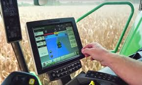Sensoriamento remoto:
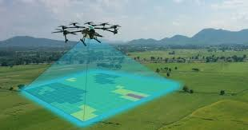Robótica:
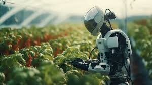Irrigação automatizada:
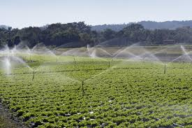Quais são as tecnologias mais usadas na área rural?
Aplicativos.
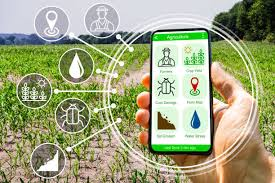Drones.
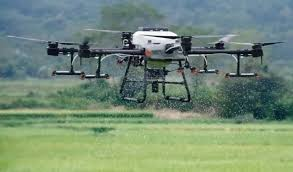Sensores.
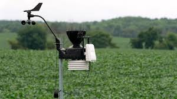Estações meteorológicas.
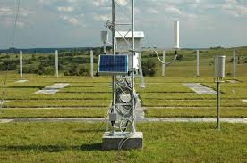Sistema de GPS e automação.
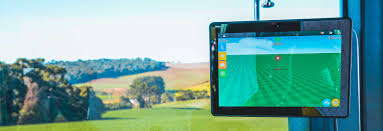Internet das “coisas” (IoT)
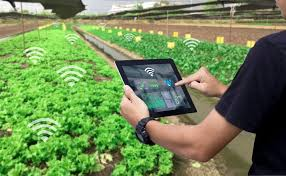Sementes
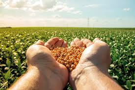Fertilizantes
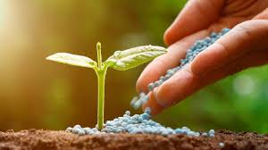